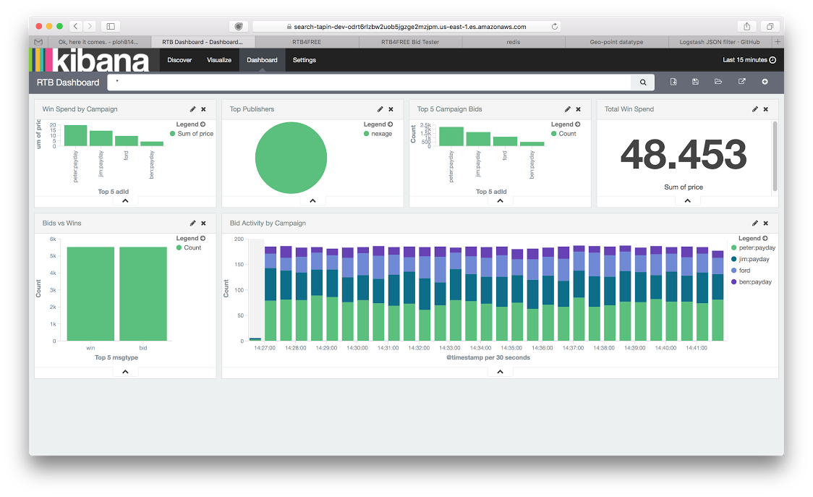

RTB generates a lot of transactions and there is a great deal of market intelligence available in that data. The issue is how to get at that data. RTB4FREE uses REDIS publish/subscribe channels to transmit its bid requests, bids, wins, pixel loads and click through info. You can easily subscribe to these channels and then process this data yourself.
Out of the box, RTB4FREE works with Elastic Search. There is nothing special you have to do on RTB4FREE to enable this but you do need the RTB4FREE Logstash logger called 'RTB4FREE-Stash-Logger' available here. Of course you also need to set up Elastic Search too. More information about that is available here.
With the RTB4FREE Logstash logger, the following is immediately available to you:
Contact RTB4FREE for more information on how to integrate Logstash'ed RTB information using Elastic Search. An example Kibana graph is shown below: 